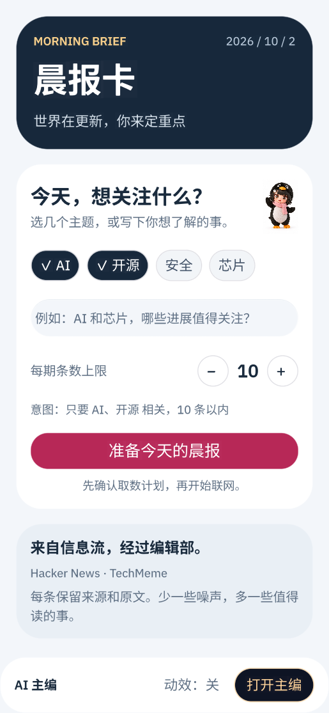
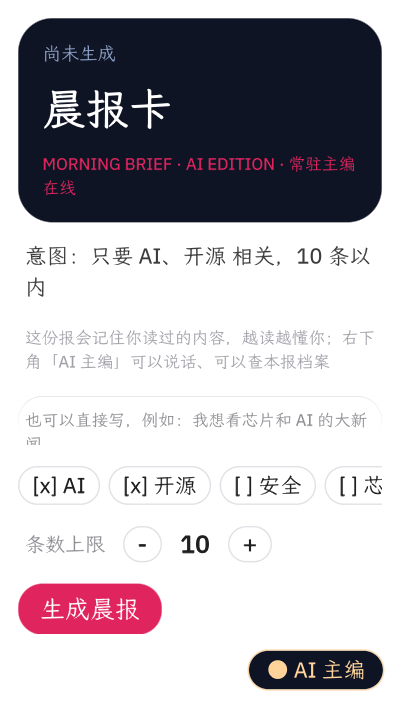
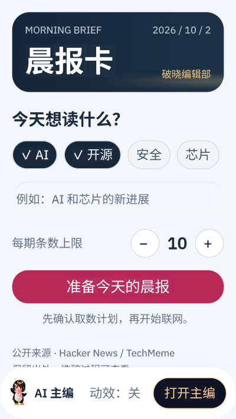

第二轮原生 UI：更紧凑的晨光刊头、连续的关注设置、清楚的选稿过程和阅读节奏。



截图来自实际 card-host。普通脚本检查主题、条数、授权与拒绝、主编开合和动效偏好。本地新闻副本检查列表、阅读、滚动、前后条与返回；模拟能力副本检查语音控件与非空对话布局。
真实 AI 选稿、生图、语音收发及发布尚未在本轮联调。默认角色皮肤仍可由用户选择。完整键盘导航和屏幕阅读器需单独验证。
Bundle 维持未签名并通过本地 Hub 检查；字体以常用字子集控制在官方8MiB限额内，保留罕见字回退。